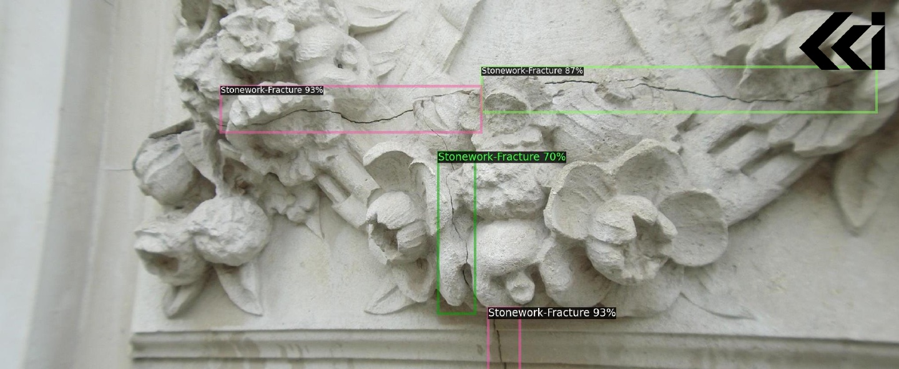
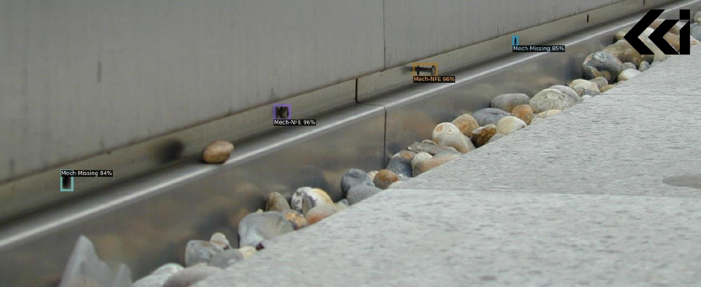

Building Façade Fault Detection – Turnstone Construction
Project Overview
During my internship at Turnstone Construction, I contributed to the development of an automated building façade inspection system. The goal was to improve the speed, safety, and accuracy of condition monitoring on high-rise buildings. The concept involved mounting an imaging system onto the cradle of a Building Maintenance Unit (BMU) so that façades could be continuously scanned during routine window-cleaning operations.
I designed a working prototype capable of capturing high-resolution façade imagery and running onboard computer-vision analysis to detect defects such as cracks, corrosion, seal failures, and other surface faults. The collected data was processed using a trained AI vision model which automatically flagged potential issues for building management review.

My Contributions
I was responsible for the end-to-end prototype design and integration, including:
- Mechanical design: Designed the protective casing and mounting interface for the unit, ensuring secure attachment to the BMU cradle while maintaining environmental protection, vibration resistance, and serviceability.
- Electronics design: Designed the circuitry supporting the microcomputer and onboard cameras, including power distribution, signal routing, and integration of peripheral sensors required for reliable outdoor operation.
- Embedded AI deployment: Implemented the computer-vision model on an NVIDIA Jetson platform, optimising inference performance and deploying the supporting code for real-time image capture, processing, and fault reporting.
Example Detection Outputs
 The prototype successfully demonstrated automated façade inspection in a real operational environment. Following validation trials, the project secured further investment and was subsequently developed commercially as a Façade AI Ltd.